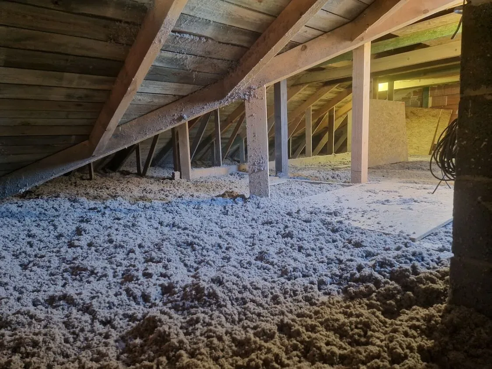

Alternatywa dla piany
Wdmuchiwanie celulozy i wełny
Ekologiczne ocieplanie trudno dostępnych miejsc: poddaszy, stropów, skosów i ścian szkieletowych.
Celuloza to naturalny materiał, który „oddycha”, reguluje wilgotność i tworzy zdrowy mikroklimat. Granulat wełny daje ciszę (świetna akustyka) i najwyższe bezpieczeństwo pożarowe.
Wypełniamy każdą szczelinę, bez uciążliwego remontu. Poprawa komfortu akustycznego i termicznego przez cały rok.